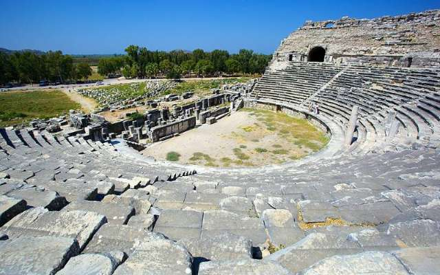
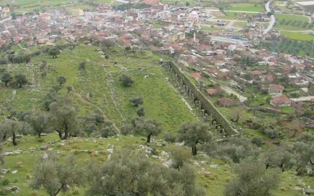
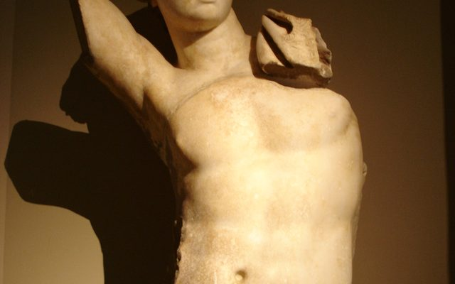

Startseite › Sehenswürdigkeiten nach Provinzen › Aydın
Der Kültür-Varlıkları-Führer verzeichnet 17 Orte in Aydın: 13 ausgrabungsstätte, 4 museum. Unten finden Sie die Höhepunkte, eine Karte und die vollständige Liste.
⭐ Höhepunkte

1 · Aydın · AusgrabungsstätteMuseum und Ausgrabungsstätte Afrodisias
Aphrodisias, nach der Liebesgöttin Aphrodite benannt, war im römischen Mittelmeerraum für seine Kunst berühmt.

2 · Aydın · AusgrabungsstätteAusgrabungsstätte Milet
Milet war eine der einflussreichsten Städte der Antike, gründete Dutzende Kolonien vom Schwarzen Meer bis Ägypten und gilt als Geburtsort der Philosophie: Thales,…

3 · Aydın · AusgrabungsstätteAusgrabungsstätte Alabanda
Alabanda ist eine karische Stadt, die sich durch das heutige Dorf Doğanyurt im Çine-Tal zieht; Ruinen und Dorfhäuser gehen ineinander über.
🗺 Auf der Karte
📍 Alle Orte (17)
Ausgrabungsstätte (13)
Museum und Ausgrabungsstätte AfrodisiasAusgrabungsstätte · UNESCOAusgrabungsstätte MiletAusgrabungsstätteAusgrabungsstätte AlabandaAusgrabungsstätte
Ausgrabungsstätte AlindaAusgrabungsstätte Tempel des Didim ApollonAusgrabungsstätte
Tempel des Didim ApollonAusgrabungsstätte Antike Stadt GergaAusgrabungsstätte
Antike Stadt GergaAusgrabungsstätte Ausgrabungsstätte MagnesiaAusgrabungsstätte
Ausgrabungsstätte MagnesiaAusgrabungsstätte Antike Stadt MyusAusgrabungsstätte
Antike Stadt MyusAusgrabungsstätte Ausgrabungsstätte Nysa SultanhisarAusgrabungsstätte
Ausgrabungsstätte Nysa SultanhisarAusgrabungsstätte Ausgrabungsstätte PrieneAusgrabungsstätte
Ausgrabungsstätte PrieneAusgrabungsstätte
Antike Stadt TralleisAusgrabungsstätteAntike Stadt AmyzonAusgrabungsstätteAusgrabungsstätte KadıkalesiAusgrabungsstätte